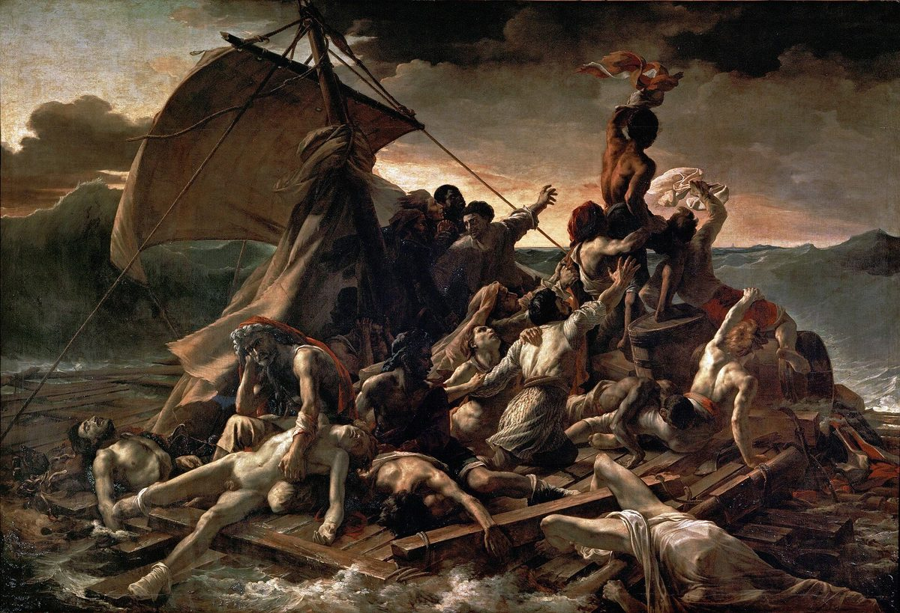

Hidden in the Frame · Louvre Museum, Paris
The Raft of the Medusa
Théodore Géricault · 1818–19 · Oil on canvas, 491 × 716 cm · Room 700 (Denon wing, level 1)

The story
In July 1816 the French frigate “Méduse” ran aground on a sandbank off West Africa. There weren't enough lifeboats: at least 147 people were put on a hastily built raft that was soon drifting alone. After 13 days of hunger, murder and cannibalism, a ship found 15 survivors by chance. The 27-year-old Géricault interviewed survivors, had a model of the raft built and studied corpses – and turned it all into a scandal.
Details to look for
- Look for the tiny ship on the horizon to the right. It is the “Argus”, which later rescues the survivors. Here it is just a dot – and it is sailing past without seeing the raft.
- At the very top a man waves a cloth. The bodies build up towards him like a pyramid: from the dead at the bottom to hope at the peak.
- On the left an older man holds a dead young man and stares into space. He doesn't look at the ship. For him, hope is already over.
- In front lies a man face down with his arm stretched out. Géricault's young friend Eugène Delacroix is said to have posed for this figure – the man who later painted “Liberty Leading the People” next door.
What it says
Not a hero painting but an accusation: a current scandal, painted as large as only kings and gods usually were.
Open the full guide – zoom, audio guide, German & Japanese →